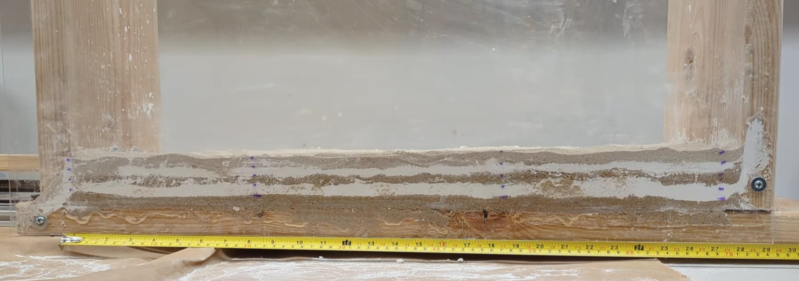
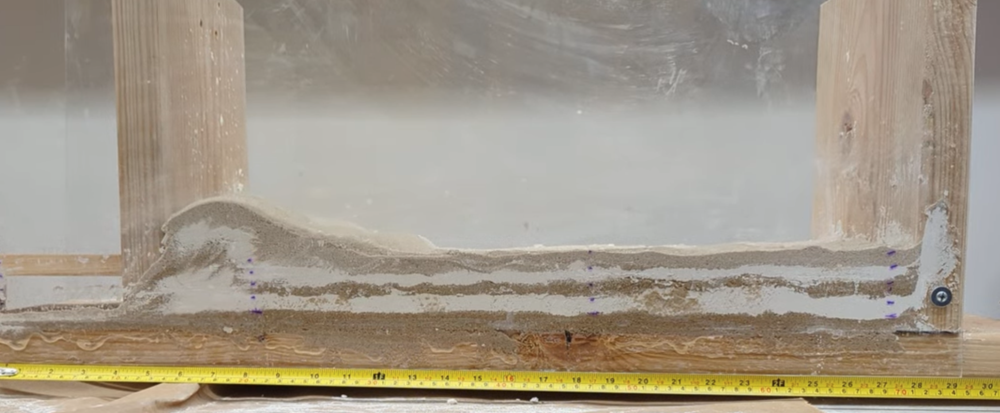
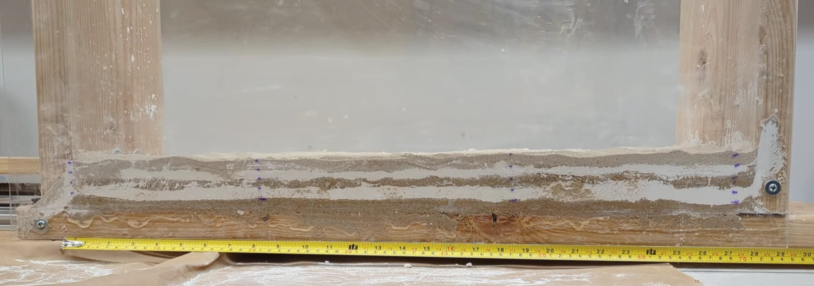
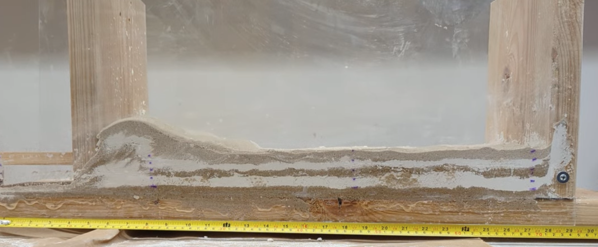

Geoscientist & Modeler building quantitative stories of landscapes
I work with numerical models applied to geomorphology, and cosmogenic nuclide analysis to understand Earth surface processes.


I work with numerical models applied to geomorphology, and cosmogenic nuclide analysis to understand Earth surface processes.
Modeled Be-10 and Al-26 production and decay to infer landscape exposure histories.
Physical and numerical experiments exploring shortening and drainage reorganization.

Physical and numerical experiments exploring shortening and drainage reorganization.

 




1. Fadul, C.M., Oliveira, P. & Val, P. (2022) Ongoing landscape transience in the eastern Amazon Craton consistent with lithologic control of base level. Earth Surface Processes and Landforms, 1– 16. https://doi.org/10.1002/esp.5447
Oliveira, P., Val, P., Corbett, L., Bierman, P. (2025, October 19–22). River profile inversion and cosmogenic nuclide burial ages of shallow sedimentary deposits in the Eastern Amazonia [Oral Presentation]. GSA Connects 2025, San Antonio, TX, USA.
Oliveira, P., Val, P. (2025, May 13–15). Dating the incision of the Lower Amazon River using geomorphic markers and cosmogenic nuclides [Poster Session]. CSDMS Meeting 2025, Boulder, CO, USA.
Oliveira, P., Val, P. (2023, December 11–15). Capturing Geomorphic Signals of the Incision of the Lower Amazon River [Poster Session]. AGU Fall Meeting 2023, San Francisco, CA, USA.
Oliveira, P., & Val, P. (2021, November 16–19). Numerical modeling as a tool for assessing the lithological influence on the evolution of tectonically active landscapes (In Portuguese) [Poster Session]. SINAGEO 2021, Online, Brazil.
Oliveira, P., Val, P., & Hoke, G. (2020, December 1–17). Spatial distribution and quantification of surface uplift in the South-Central Andes and Precordillera [Poster Session]. AGU Fall Meeting 2020, Online, USA.
Oliveira, P., & Val, P. (2019, October 20–23). Numerical modeling applied to the identification of tectonic uplift in the Argentine Precordillera (In Portuguese) [Oral Presentation]. Southeast Geology Conference, Campinas, São Paulo, Brazil.
Grant obtained to process samples of 10Be and 26Al at the PRIME Lab at Purdue University.
Best proposal in sediment transport and fluvial geomorphology. Funding for Be-10 and Al-26 concentration measurements from Amazon River tributary samples.
Funding for Cosmogenic Lab training at the University of Vermont.
University of Vermont – NSF - Cosmogenic Lab Facilities | April & September 2024
Training on procedures to obtain pure quartz on river samples using HCl and HF acids. Performed and observed processes on the extraction of Be-10 and Al-26 from quartz to obtain concentration rates.
University of Boulder - Colorado | Aug. 2024
Practical and theoretical 50-hour course about science programming focusing on LandLab python package and GitHub.
CUNY Graduate Center Scholarship | Jun.- Jul. 2023
Practical and theoretical 40-hour course about the Magdalena River in Colombia. Lectures about climate, environmental challenges, and river dynamics. Practical exercises on river sediment load and ADCP technique to measure river discharge.
National Council for Scientific and Technological | 2020 - 2021
Title: Effects of rock stratification on landscape evolution: return to the north channel of the Amazon River. (In Portuguese)
Research Incentive Program - Federal University of Ouro Preto | 2019 - 2020
Title: Distinguishing between lithological, tectonic, and climatic effects on the landscape evolution of the Argentine Precordillera riding belt using numerical modeling. (In Portuguese)
Nathan J. Lyons, Tulane University | 2018
Lecture about the basis of numerical models of landscape evolution using LandLab (Python package).
Queens College, City University of New York | 2022 - present
Teaching laboratory classes in Physical Geology, about mineral and rock properties and identification, geologic history of rocks, and landscape evolution.
Landscape Evolution and Cosmogenic Isotopes Lab | 2021 - present
I assist other students in the group (undergraduate and graduate) to build numerical models in LandLab and troubleshooting coding issues in Matlab and Python.
Votorantim Cimentos Brazil | 2021-2022
Field work, sample collection, mining planning, production database management and raw materials.
CUNY – Queens College | 2024
Developed sandbox setup with Arduino interface for tectonic demonstrations.
GitHub: landscape_num_model | In Development
Educational repository for landscape evolution models and geomorphology resources.
LandLabGeo YouTube Channel
Online tutorials on landscape evolution modeling using LandLab.